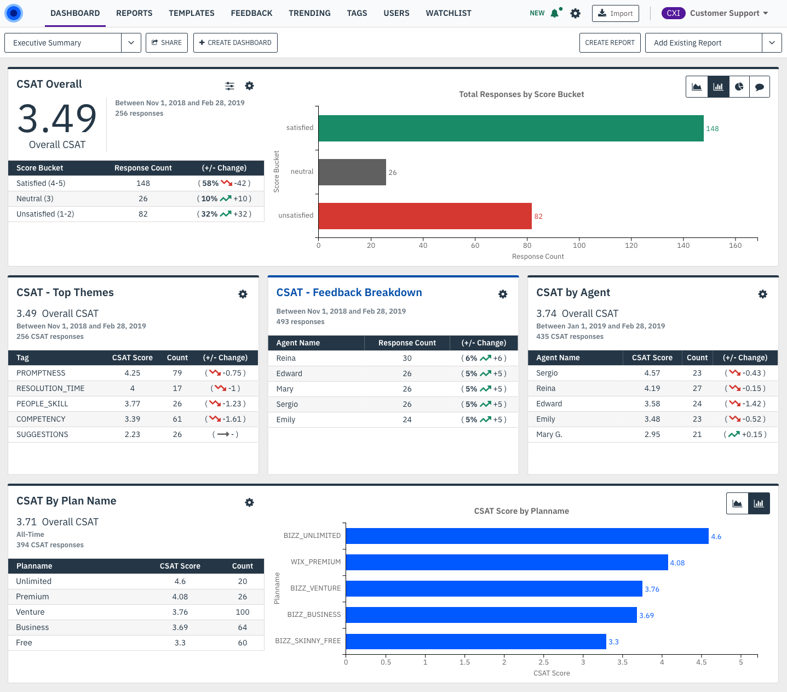
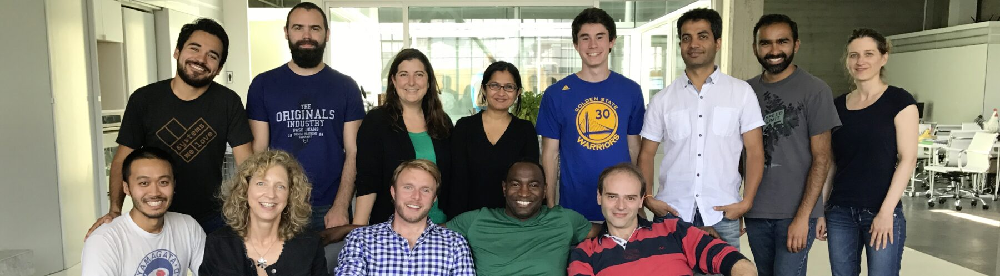
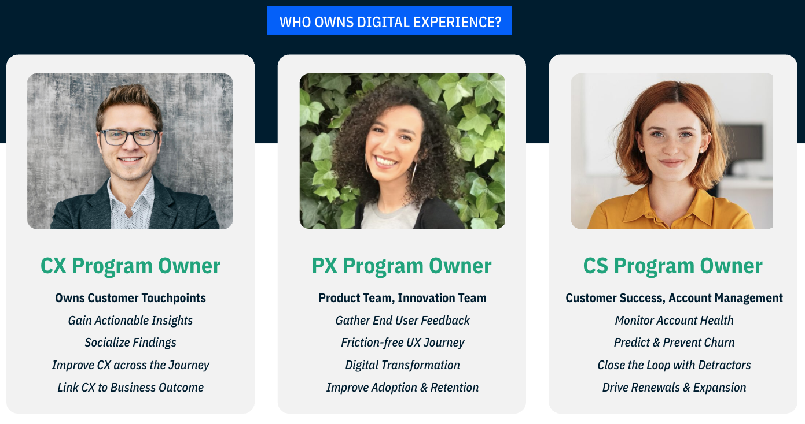
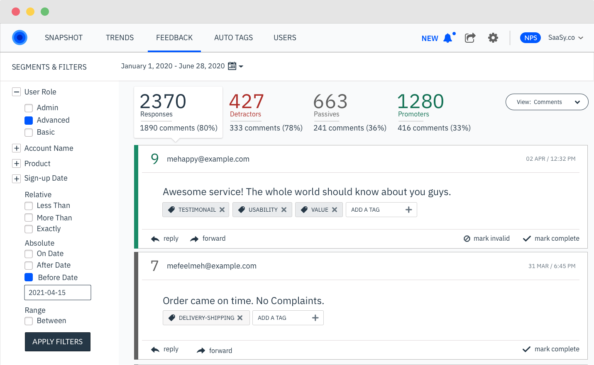
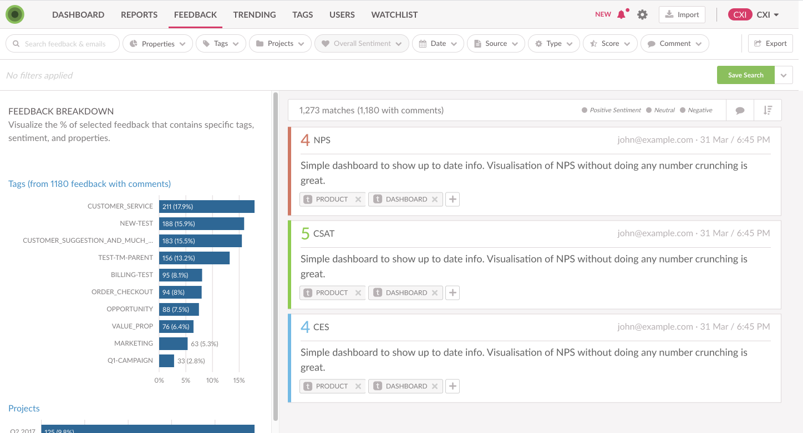
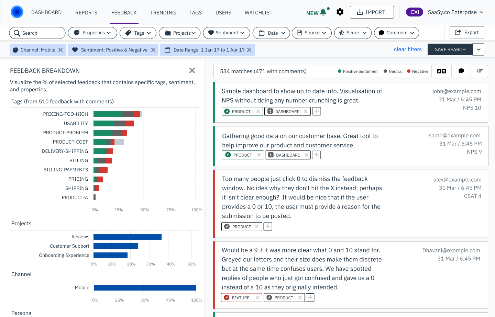

CXInsights: AI feedback analysis that helped grow Wootric from $1M to $5M+ ARR
- Company
- Wootric (acquired by InMoment, Jan 2021)
- My role
- Senior Product Designer
- Timeline
- 2015–2025
- Team
- 10 engineers, marketing, 3 design interns
- Customers
- DocuSign, Zoom, Glassdoor, Foot Locker, HSBC
- Scope
- Design, product, QA, data visualization
5×
ARR growth from new enterprise customers over three years
3B+
survey responses stored
~1%
account churn
80+
countries
Overview
What is Wootric?
Wootric started as a survey company. Any business could drop a snippet of code into its website, mobile app, text or email and start collecting NPS, CSAT, or CES responses in minutes.
CXInsights (CXI) is the enterprise layer built on top of it. It pulls feedback from every survey source into one place, lets teams build their own dashboards, and uses AI to sort open-ended feedback into themes with sentiment, so a CX team can see what customers are saying at a scale no person could read.
“NPS on Steroids”
Customer Success Manager

Role
My role
- Senior Product Designer. Led design reviews and user interviews, and used product analytics to guide decisions.
- User interviews. Ran interviews with enterprise customers throughout the design of CXI.
- Mentorship. Mentored a design intern and a front-end developer.
- Team. 4 full-stack developers, 1 back-end developer, the CEO, the CTO, and me as the only designer.

Results
Impact
CXInsights moved Wootric upmarket from startups to enterprise. Soon after launch we landed our first $100,000+ contract. We grew ARR from about $1M to $3M before InMoment acquired Wootric in January 2021. After the merger, the Wootric platform passed $5M ARR on its own.
- New enterprise customers: Zoom, DocuSign, HubSpot, Visma, Glassdoor and HSBC.
- Cross-functional work: Partnered with marketing, engineering, the C-suite and investors to build a product for enterprise.
“[Wootric] allows our Support team to segment feedback by agent and other relevant business drivers to uncover insights that help us optimize our support experience.”
Glassdoor
The problem
Problems
01
Too many responses to understand
Enterprise customers sometimes received millions of responses a month. DocuSign, Zoom and Glassdoor had teams exporting spreadsheets and building dashboards by hand.
02
Big, bad data
Data sent with surveys was disorganized. One source passed an empty company_name, another passed organization or account_name. People filtered on these and saw a blank page.
Research
Qualitative and quantitative research
“It’s so much easier when you have all of the feedback come into one place. You can look at the snapshot view. You can filter. You can triage. I never want to go through spreadsheets manually again.”
Customer Insights Manager · Hootsuite
Interviews
I designed our UX case study and ran a dozen interviews with enterprise customers to understand how they reported on feedback today. Those conversations shaped the core feature list: dashboards to share with executives, all feedback from every source in one place, actionable insights, and automatic categorization.
Personas
The research pointed to three buyers. The CX Program Owner links customer touchpoints to business outcomes. The PX Program Owner gathers end-user feedback to improve adoption and retention. The CS Program Owner monitors account health and works to prevent churn.

Session replays and reviews
FullStory caught what interviews missed. People would filter, hit zero results, and give up. Public reviews backed it up: customers liked the simple dashboard but kept running into its limits as their data grew.
Accessibility
- WCAG 2.2 AA. Ran our own tests against WCAG 2.2 AA compliance.
- Automated audits. Axe DevTools, Lighthouse, and Microsoft’s Accessibility Insights.
- VoiceOver and color blindness. Tested manually on the devices themselves.
Benchmarks
Product analytics set the baseline. Weekly actives on the Standard Dashboard kept rising, and CX managers were screenshotting it straight into executive reports. I wanted to redesign it, but the data said to leave it alone, so it became the baseline for enterprise.

Goals
Hypothesis and goals
Out-of-the-box
Customers see value as soon as feedback is loaded.
Source of truth
All feedback from every source in one place.
Code-free analysis
Custom dashboards without a BI tool or spreadsheet.
ML categorization
Sort feedback automatically, at millions of responses.
Actionable
Turn the data into insights with a purpose.
Principles
Design thinking
- Simple. Customers have plenty of places to analyze data. CXI had to give them value from day one.
- Actionable. Don’t just show the data. Tell the customer what they can act on.
- Transparent AI. Every machine-applied tag says how and why it was applied, right where it appears.
- Meet people where they report. CX managers live in executive decks, so dashboards had to be clean enough to screenshot.
- Big, dirty data. Inconsistent schemas, missing metadata, mislabeled fields. The experience had to work around all of it.
Landscape
Competitive analysis
Tableau
Powerful and technical. Customers needed an in-house analyst to use it.
Spreadsheets
Manual and slow, but the most common way customers handled feedback.
Small AI shops
Custom models per customer. Expensive, with little industry knowledge.
Exploration
Experiments
Categorizing feedback with tags
- Shipped: Smart Tags. Matched automatically by machine learning, with a tag set for each industry built with customers.
- Cut: Deleting Smart Tags to train the model. Retraining needed 1,000 to 5,000 clean responses and a rebuild, so corrections stayed on the response.
- Shipped: Text Match Tags. Users add specific phrases, like “credit card” for a BILLING tag.
- Cut: Text Match Tags with filters. Only tag feedback matching a custom filter. After scoping with engineering, it moved to a later release.
- Shipped: Manual Tags. Applied by hand, one response at a time.
- Cut: Sentiment-only tags. I argued sentiment should live outside of tagging.

Survey feedback cards
Feedback cards went through the most iterations. They had to be easy to scan, look different where it mattered (score type, sentiment), and make tags quick to add, delete, and understand.

Rapid prototyping
- Cut: AI controls. Letting users tune the sentiment threshold was too confusing. Two wrong responses in a hundred made people want to change the whole model, so we let them fix one response at a time instead.
- Shipped: Custom reports. We built the first reports with customers, reproducing the reports they most often made for themselves.
- Cut: Onboarding and empty states. My design intern built a great onboarding flow. We pivoted when account managers said they would preload data and onboard enterprise customers personally.
Build order
Sequencing and scaling out
We built in layers, each one tested with customers.
- 01Standard DashboardA simple, free view every customer starts on.
- 02Feedback BreakdownSee all the feedback first.
- 03AI auto-categorizationSmart, Text Match, and Manual tags with sentiment.
- 04Executive DashboardCustom reports once customers could see their feedback.
- 05WatchlistsAlerts when a segment a customer watches needs attention.
Outcome
Outcome
80%
of enterprise users’ time was spent in Feedback Breakdown. CXInsights became their most used app.
Feedback Breakdown let customers see their data before acting: which segments existed, how much data each held, and a one-click path to dig in or build a report. CXInsights carried Wootric from startups to enterprise, signed our biggest contracts, and helped take ARR from $1M to $3M before the InMoment acquisition, and past $5M after.

Reviews
What customers said
“I personally love using the dashboard to monitor trends… It’s really useful that they let you filter by promoters and detractors.”
Thiago N. · Sr. Product Marketing Manager
“It’s really easy to consult information and make reports. It’s a really clear and easy-to-use platform.”
Ana Cristina S. · Sr. Digital Transformation Officer
“The UI is simple and clean but it’s a robust platform overall. The dashboard has all the information you need.”
Marketing & Advertising
“We immediately reach out to customers who have given us a low score and it has helped us to retain our customers.”
Deepak D. · CTO & Co-Founder
Reviews from G2, written by Wootric customers.
Takeaway
Conclusion
The most valuable fix wasn’t a new chart. It was admitting that customer data was big, messy, and hard to work with, and designing for it. That lesson still applies: most CX dashboards still deal with empty screens, bad data, and lost trust.
With how AI has taken over, I’m glad I was there on the ground floor in 2020.
Press
- InMoment acquires digital feedback leader Wootric ↗InMoment
- InMoment acquires digital feedback solutions provider Wootric ↗DestinationCRM
- InMoment acquires CX company ↗Research Live